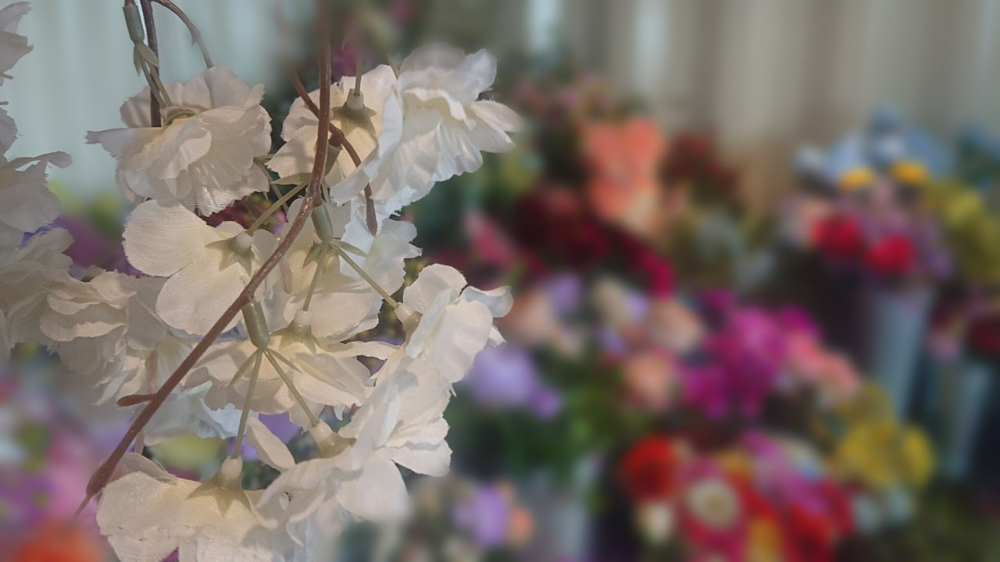

熱門景點
雲林有農業首都之稱，到處都能看到田地 但空拍下的視角，滿片田地如大自然的布畫還有唯美的瑰莊園、浪漫教堂 和景觀餐廳玫 就連上山欣賞夜景都還能吃鍋兼養生泡腳，讓來雲林完的帥哥、美女也能很溫暖 誰說雲林 很難玩，跟著滿分週末走跳雲林包準每個景點都能讓你有難忘的回憶啦。


萬年峽谷

難得的假期，想要出去走走卻又不知何去何從，沒關係~在這能找到適合爸爸媽媽帶著 家中的 寶貝一同吃、喝、玩樂的絕佳地點，讓即使忙碌的 上班族或是家庭主 夫/婦，能在這寶貴的假期中陪伴寶貝們，在童城中創造美號回憶 。
雲林有農業首都之稱，到處都能看到田地 但空拍下的視角，滿片田地如大自然的布畫還有唯美的瑰莊園、浪漫教堂 和景觀餐廳玫 就連上山欣賞夜景都還能吃鍋兼養生泡腳，讓來雲林完的帥哥、美女也能很溫暖 誰說雲林 很難玩，跟著滿分週末走跳雲林包準每個景點都能讓你有難忘的回憶啦。
除了欣賞當地特色老街建築外,當然就是要來品嘗在地美食,雲林好多美食都好好吃,而且雲林內包含斗六、古坑 、林內、斗南、大埤、元長、土庫、虎尾、莿桐、二崙、崙背、褒忠、麥寮、東勢、四湖，元長、北港、水林、口湖；台西等等。 在這能找到必吃雲林美食，想要餐廳、甜點、下午茶、早午餐、零食、夜市等等通通都有。